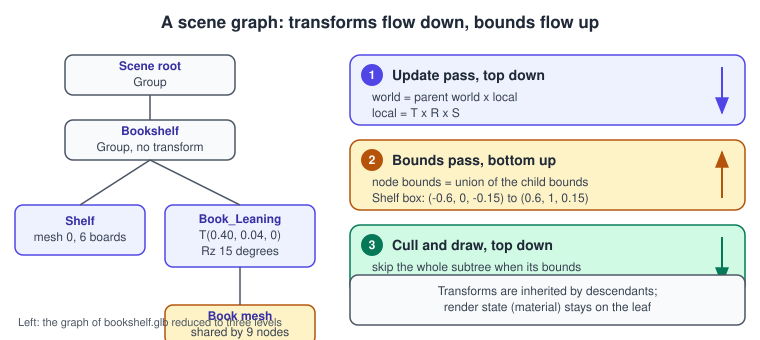
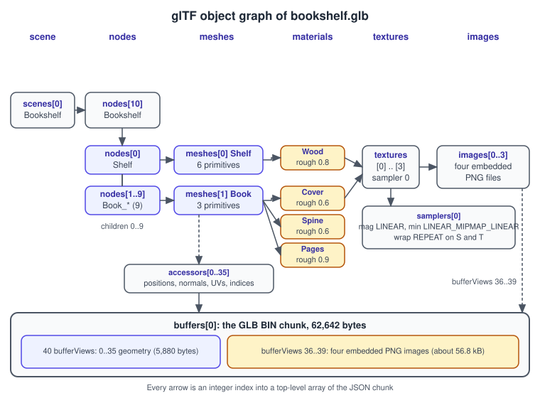
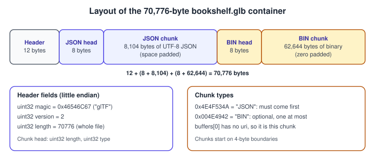
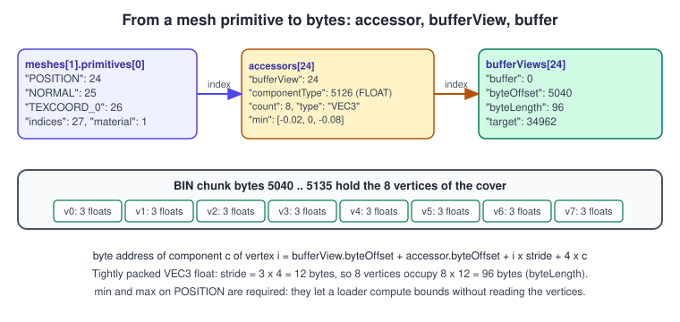
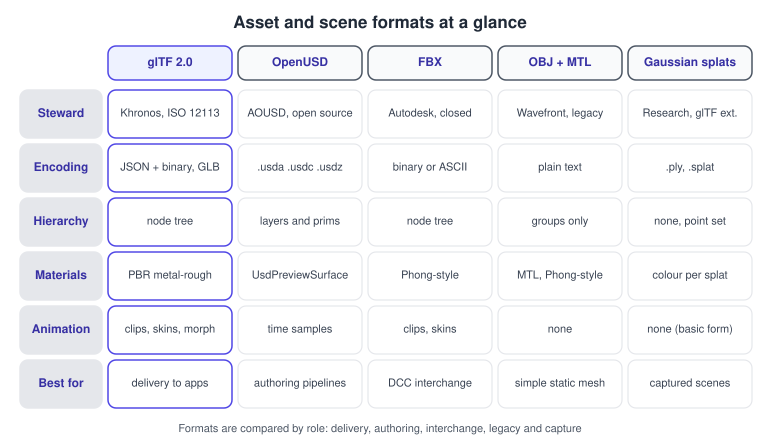

Scene Graphs and Asset Formats
|
This content was generated with the assistance of AI and should be verified against the official documentation before being relied on in production. |
A rendering API draws what it is told to draw; somebody still has to decide what exists in the world, where it is, how it is stored on disk and how it reaches the GPU. This page covers both halves of that problem: the in-memory structure, the scene graph, and the on-disk structure, the asset format. It was checked in November 2026 against glTF 2.0 (also published as ISO/IEC 12113:2022), the OpenUSD 26.x releases and the AOUSD Core Specification 1.0, and against the documentation of three.js, Unity 6.3 LTS, Unreal Engine 5.8, RealityKit and Java 3D as maintained by the JogAmp project. Everything here is platform-neutral: the formats are plain files and the scene-graph ideas apply in every engine. The running example is the Bookshelf scene, stored in the shared file bookshelf.glb, and the walkthrough in this page reads that very file.
The pages that this one builds on are Coordinate Spaces and Transforms and Meshes and Vertex Data. Rotations are covered in Rotations and Quaternions.
What a scene graph is
A scene graph is a directed acyclic graph, in practice almost always a tree, whose nodes represent things in the world. Each node stores a local transform relative to its parent, and the meaning of a node is the product of every transform between it and the root. Moving the shelf moves every book on it without touching a single book. That one property, the transform hierarchy, is the reason scene graphs exist.
Typical node roles are:
-
Group or transform nodes: no geometry of their own, only a transform and children (Java 3D
TransformGroup, three.jsGroup, UnityTransform, UnrealUSceneComponent, RealityKitEntity). -
Leaf nodes: something to draw or evaluate (a mesh, a light, a camera, a sound, a particle emitter).
-
Shared definitions: meshes, materials and textures that many nodes reference. In
bookshelf.glball nine books reference oneBookmesh, so the vertex data exists once.

Figure 1 shows the three traversals every scene-graph implementation performs, whatever it calls them. Marker 1 is the update pass, which turns local transforms into world transforms. Marker 2 is the bounds pass, which walks from the leaves to the root so that every parent knows the volume that contains all its children. Marker 3 is the render pass, which uses those bounds to skip whole subtrees. The next sections take them in turn.
Local and world transforms
Each node holds a translation \(T\), a rotation \(R\) (a quaternion in practice) and a scale \(S\). The local matrix and the world matrix are
\[M_{ local } = T \, R \, S \qquad M_{ world } = M_{ world, parent } \, M_{ local }\]
with column vectors, so the scale is applied first and the root’s transform last. A point \(p\) in the node’s own space
reaches world space as \(M_{ world } \, p\). For Book_Leaning in bookshelf.glb the parent chain is the root node
Bookshelf, which has no transform, so the world matrix equals the local one. The book’s top corner at local position
\((0.02, 0.22, 0.08)\) is rotated 15 degrees about the Z axis and then moved by \((0.40, 0.04, 0)\):
\[x' = 0.02 \cos 15^\circ - 0.22 \sin 15^\circ + 0.40 \approx 0.362 \qquad y' = 0.02 \sin 15^\circ + 0.22 \cos 15^\circ + 0.04 \approx 0.258\]
so the corner sits at about \((0.362, 0.258, 0.08)\) in the shelf’s space. If the whole shelf were then placed in a room by a parent node, only that parent’s matrix would change.
Three details cause most bugs:
-
Order: \(T R S\) means scale, then rotate, then translate. Applying them in another order shears or orbits the object around the wrong point.
-
Non-uniform scale: normals must be transformed with the inverse transpose of the upper 3 by 3 of \(M_{ world }\), not with \(M_{ world }\) itself, or lighting is wrong on stretched objects. The books of
bookshelf.glbuse a Y scale between 0.8 and 1.0 for exactly this reason: they make the lesson visible. -
Mirroring: a negative scale flips the triangle winding. The glTF specification says that a node whose world matrix has a negative determinant must have its front-face winding reversed.
The first code example computes world matrices for a small node tree in C++ with the GLM library. Note GLM’s quaternion
constructor takes w first, whereas glTF stores rotations as [x, y, z, w].
#include <glm/glm.hpp>
#include <glm/gtc/quaternion.hpp>
#include <memory>
#include <string>
#include <vector>
struct Node {
std::string name;
glm::vec3 translation{0.0f};
glm::quat rotation{1.0f, 0.0f, 0.0f, 0.0f}; // GLM order: w, x, y, z
glm::vec3 scale{1.0f};
std::vector<std::unique_ptr<Node>> children;
glm::mat4 world{1.0f};
bool dirty = true; // set when a local value changes
glm::mat4 local() const {
return glm::translate(glm::mat4(1.0f), translation) *
glm::mat4_cast(rotation) *
glm::scale(glm::mat4(1.0f), scale); // T * R * S
}
// Update pass: parent first, then children. A dirty parent dirties its subtree.
void update(const glm::mat4& parentWorld, bool parentChanged) {
const bool changed = dirty || parentChanged;
if (changed) {
world = parentWorld * local();
dirty = false;
}
for (auto& child : children) {
child->update(world, changed);
}
}
};
// glTF stores rotation as [x, y, z, w]; convert when loading:
// node.rotation = glm::quat(r[3], r[0], r[1], r[2]);The dirty flag matters for performance. A scene with thousands of static nodes should not recompute thousands of matrix products every frame; engines keep a "world matrix needs update" flag per node and only recompute the branches that moved.
The same idea in the engines
Every engine exposes the same hierarchy under a different name, and each lets you read the world matrix of a node.
| Engine | Hierarchy node | World transform |
|---|---|---|
three.js |
|
|
Unity 6.3 |
|
|
Unreal Engine 5.8 |
|
|
RealityKit |
|
|
Java 3D |
|
|
The following Unity C# example builds the leaning book as a child of the shelf and reads back its world matrix.
using UnityEngine;
public class LeaningBook : MonoBehaviour
{
[SerializeField] Transform shelf;
[SerializeField] Transform bookPrefab;
void Start()
{
Transform book = Instantiate(bookPrefab);
book.SetParent(shelf, worldPositionStays: false); // keep the local values
book.localPosition = new Vector3(0.40f, 0.04f, 0f);
book.localRotation = Quaternion.Euler(0f, 0f, 15f); // degrees about Z
book.localScale = Vector3.one;
Matrix4x4 world = book.localToWorldMatrix; // parent * local
Debug.Log($"Book origin in world space: {world.GetColumn(3)}");
}
}Source: Unity Scripting API: Transform.
The RealityKit version is the same three lines in Swift. A generated box is centred on its origin, while the book mesh in
bookshelf.glb has its origin on the bottom face, so the box is lifted by half its height.
import RealityKit
let shelf = Entity()
let book = ModelEntity(
mesh: .generateBox(size: [0.04, 0.22, 0.16]),
materials: [SimpleMaterial(color: .brown, isMetallic: false)]
)
book.position = [0.40, 0.04 + 0.11, 0] // lift by half the height
book.orientation = simd_quatf(angle: .pi / 12, axis: [0, 0, 1]) // 15 degrees about Z
shelf.addChild(book)
let world = book.transformMatrix(relativeTo: nil) // relativeTo: nil means worldAnd in Unreal Engine 5.8 C++ the attachment is declared in the constructor. Unreal uses a left-handed, Z-up system in centimetres, so the numbers are converted from the glTF values (metres, right-handed, Y-up) by the importer rather than by hand.
// BookshelfActor.cpp
ABookshelfActor::ABookshelfActor()
{
Shelf = CreateDefaultSubobject<UStaticMeshComponent>(TEXT("Shelf"));
SetRootComponent(Shelf);
LeaningBook = CreateDefaultSubobject<UStaticMeshComponent>(TEXT("LeaningBook"));
LeaningBook->SetupAttachment(Shelf); // child of the shelf
LeaningBook->SetRelativeLocation(FVector(40.f, 0.f, 4.f)); // centimetres
LeaningBook->SetRelativeRotation(FRotator(0.f, 0.f, 15.f)); // Pitch, Yaw, Roll
}Bounds, culling and level of detail
A bounding volume is a cheap shape that contains a more complicated one. The scene graph stores one per node so that a single test can reject a whole branch.
| Volume | Test cost and fit | Typical use |
|---|---|---|
Axis-aligned bounding box (AABB) |
Six numbers; fast, but grows when the object rotates |
Broad-phase collision, culling, glTF accessor |
Bounding sphere |
Four numbers; the fastest frustum test; loose fit for long objects |
Frustum culling, three.js |
Oriented bounding box (OBB) |
Centre, three axes, extents; tighter, costlier test |
Narrow-phase collision |
Bounding volume hierarchy (BVH) |
A tree of boxes over triangles or objects |
Ray picking, ray tracing, physics |
For the shelf of bookshelf.glb the six boards together span from \((-0.6, 0, -0.15)\) to \((0.6, 1, 0.15)\), so the
shelf is 1.2 m wide, 1 m tall and 0.3 m deep. Its bounding sphere has centre \((0, 0.5, 0)\) and radius
\(\sqrt{0.6^2 + 0.5^2 + 0.15^2} \approx 0.795\). One book is 4 cm thick, 22 cm tall and 16 cm deep, with its origin on the
bottom face. When Book_Leaning is rotated 15 degrees its world AABB becomes about 9.5 cm wide instead of 4 cm, which is the
cost of axis-aligned boxes under rotation. A parent’s bounds are the union of its children’s bounds after each child
transform, so a moving child invalidates the bounds of every ancestor.
Frustum culling
The view frustum is six planes. A sphere is outside when its centre lies farther than its radius behind any plane, and the whole subtree under that node is skipped. Because the test is conservative, an object that is partly visible is still drawn and everything the GPU clips later is only wasted work, never a wrong picture.
#include <array>
#include <glm/glm.hpp>
struct Plane { glm::vec3 n; float d; }; // inside when dot(n, p) + d >= 0
struct Sphere { glm::vec3 c; float r; };
// Extract the six planes from a combined projection * view matrix (Gribb/Hartmann
// method, planes in world space). Each plane is a sum or difference of matrix rows.
std::array<Plane, 6> frustumPlanes(const glm::mat4& vp) {
auto row = [&](int i) { return glm::vec4(vp[0][i], vp[1][i], vp[2][i], vp[3][i]); };
const glm::vec4 r0 = row(0), r1 = row(1), r2 = row(2), r3 = row(3);
const glm::vec4 raw[6] = { r3 + r0, r3 - r0, r3 + r1, r3 - r1, r3 + r2, r3 - r2 };
std::array<Plane, 6> out;
for (int i = 0; i < 6; ++i) {
const float len = glm::length(glm::vec3(raw[i]));
out[i] = { glm::vec3(raw[i]) / len, raw[i].w / len };
}
return out;
}
bool visible(const std::array<Plane, 6>& f, const Sphere& s) {
for (const Plane& p : f) {
if (glm::dot(p.n, s.c) + p.d < -s.r) return false; // fully outside one plane
}
return true; // inside or intersecting
}Source: three.js documentation: Frustum.
The near plane row above, r3 + r2, assumes the OpenGL clip range of -1 to 1 for depth. Direct3D, Vulkan, Metal and WebGPU
use 0 to 1, where the near plane is simply r2. This is the kind of detail discussed in
Coordinate Spaces and Transforms.
In three.js the same job is already done for you: Object3D.frustumCulled is true by default, and the renderer tests each
object’s bounding sphere before it issues a draw call. Unity culls with the camera frustum and optional occlusion culling;
Unreal adds distance culling and, in recent versions, GPU-driven culling for Nanite geometry.
Level of detail
Level of detail (LOD) swaps a node’s geometry for a cheaper version as it gets farther away or smaller on screen. The
selection is usually a function of the projected size of the bounding sphere. A switch with hysteresis, where the up and down
thresholds differ a little, avoids the visible flicker of an object that sits exactly on a boundary. Unity has the
LODGroup component, three.js has LOD, Unreal has per-mesh LOD settings and automatic generation, and Java 3D had
DistanceLOD driven by a Switch node. Continuous schemes such as Nanite in Unreal Engine replace the discrete levels
with cluster-based streaming; they are covered by the engine pages, not here.
Sharing, instancing and render state
Scene graphs separate what from where. One mesh referenced from nine nodes is stored and uploaded once. When many
objects share the same mesh and material, engines draw them with instancing, which sends one draw call plus a buffer of
per-instance transforms. glTF expresses a shared mesh by repeating the mesh index in several nodes, and the optional
EXT_mesh_gpu_instancing extension stores the transforms in the file for large crowds.
Transforms are inherited down the tree, but materials are not: in glTF, three.js, Unity and Unreal the material is attached
to the mesh, not to a group. In Java 3D the Appearance also belonged to the Shape3D leaf, while lights and fog applied to
the leaves that fell inside their bounds. State that does flow down in some engines, such as visibility flags and layers,
is documented per engine and should not be assumed.
Java 3D as the classical scene graph
Java 3D, introduced by Sun in the late 1990s and the subject of Selman’s Java 3D Programming and Sun’s The Java 3D API
Specification, is the clearest teaching example of a retained-mode scene graph, which is why this section keeps
its vocabulary. Its scene graph is built from BranchGroup, TransformGroup, Switch, Shape3D, Behavior, lights,
sounds and Link or SharedGroup nodes, and a Locale anchors a graph in a VirtualUniverse. It had four ideas that every
modern engine still uses and two that did not survive:
-
Survived: the transform hierarchy, bounds on every node, sharing through
SharedGroupandLink, and behaviours (small objects that run when a condition such as "N frames elapsed" holds, the ancestor of engine scripts and systems). -
Did not survive: capability bits (
ALLOW_TRANSFORM_WRITEand friends), which declared up front which nodes could change after the graph became live, and compilation, in which the library rewrote the graph into an optimised internal form (BranchGroup.compile()). Modern engines instead keep everything editable and lean on batching, instancing and GPU-driven rendering for speed.
The Bookshelf’s leaning book in Java 3D reads like this. The package names are those of Java 3D 1.5 and of the JogAmp 1.7 continuation.
import javax.media.j3d.*;
import javax.vecmath.Vector3d;
import com.sun.j3d.utils.universe.SimpleUniverse;
public class LeaningBook {
public static void main(String[] args) {
SimpleUniverse universe = new SimpleUniverse();
BranchGroup root = new BranchGroup();
Transform3D t = new Transform3D();
t.rotZ(Math.toRadians(15.0));
t.setTranslation(new Vector3d(0.40, 0.04, 0.0));
TransformGroup leaning = new TransformGroup(t);
leaning.setCapability(TransformGroup.ALLOW_TRANSFORM_WRITE); // may move once live
leaning.addChild(new Shape3D(/* book geometry */ null, new Appearance()));
root.addChild(leaning);
root.compile(); // optional optimisation step
universe.addBranchGraph(root); // the graph becomes live
}
}glTF 2.0
glTF (GL Transmission Format) is the Khronos Group’s file format for delivering 3D scenes to applications. It is designed to be small, quick to parse and directly uploadable to a GPU: vertex data is stored in the binary layout the graphics API will consume, and everything else is a short JSON description. Version 2.0, released in 2017, is also the international standard ISO/IEC 12113:2022. Its materials follow the metallic-roughness physically based model, whose equations are given in the specification’s appendix and explained in Lighting and Shading Models.
Conventions fixed by the specification:
-
right-handed coordinate system, positive Y up, positive Z pointing to the front of the asset, units in metres;
-
triangles wound counter-clockwise when seen from the front;
-
rotations are unit quaternions stored as
[x, y, z, w]; -
texture coordinates have their origin at the top-left corner of the image, with V increasing downwards;
-
base-colour and emissive textures are sRGB, all other textures are linear data.
The top-level arrays
A glTF asset is a JSON object with a handful of top-level arrays that refer to each other by integer index:
| Array | What it holds |
|---|---|
|
Lists of root node indices; |
|
The hierarchy: |
|
Each mesh has |
|
A typed view onto bytes: |
|
A byte range of a buffer with an optional |
|
The raw bytes: a |
|
Material parameters, a texture as an image plus a sampler, filtering and wrapping, and the image source |
|
Keyframe channels, joint hierarchies and projection parameters (not used by the Bookshelf) |
|
Declared extensions; a loader must refuse a file that requires one it does not support |
Because everything is an index, the order in the arrays carries no meaning. In bookshelf.glb the root node is
nodes[10] and the shelf is nodes[0]: the root was simply written last.

Walking through bookshelf.glb
The file is the shared model of this section: a shelf of six boards and nine books, 70,776 bytes in total. Rather than
describe it from the generator script, read it. This Python script uses only the standard library, parses the GLB container
and prints the node tree and the totals. Run it as python3 -I inspect_glb.py bookshelf.glb.
import json
import struct
import sys
path = sys.argv[1]
data = open(path, "rb").read()
magic, version, length = struct.unpack_from("<4sII", data, 0)
print("header :", magic.decode("ascii"), "version", version, "length", length)
offset = 12
json_doc = None
bin_len = 0
while offset < length:
chunk_len, chunk_type = struct.unpack_from("<I4s", data, offset)
body = data[offset + 8 : offset + 8 + chunk_len]
print("chunk :", chunk_type.decode("ascii").strip("\0"), chunk_len, "bytes")
if chunk_type == b"JSON":
json_doc = json.loads(body)
elif chunk_type == b"BIN\0":
bin_len = chunk_len
offset += 8 + chunk_len
doc = json_doc
print("arrays :", {k: len(v) for k, v in doc.items() if isinstance(v, list)})
def show(index, depth=0):
node = doc["nodes"][index]
local = {k: node[k] for k in ("translation", "rotation", "scale") if k in node}
mesh = " mesh=%s" % doc["meshes"][node["mesh"]]["name"] if "mesh" in node else ""
print(" " * depth + "%d %s%s %s" % (index, node.get("name"), mesh, local or ""))
for child in node.get("children", []):
show(child, depth + 1)
for scene in doc["scenes"]:
print("scene :", scene["name"])
for root in scene["nodes"]:
show(root, 1)
for mesh in doc["meshes"]:
mats = [doc["materials"][p["material"]]["name"] for p in mesh["primitives"]]
print("mesh : %-6s primitives=%d materials=%s" % (mesh["name"], len(mesh["primitives"]), mats))
view = doc["bufferViews"]
print("buffer : %d bytes, views 0-35 end at %d, images start at %d"
% (doc["buffers"][0]["byteLength"], view[35]["byteOffset"] + view[35]["byteLength"], view[36]["byteOffset"]))Its real output on the shared file is:
header : glTF version 2 length 70776
chunk : JSON 8104 bytes
chunk : BIN 62644 bytes
arrays : {'scenes': 1, 'nodes': 11, 'meshes': 2, 'materials': 4, 'images': 4, 'samplers': 1, 'textures': 4, 'buffers': 1, 'bufferViews': 40, 'accessors': 36}
scene : Bookshelf
10 Bookshelf
0 Shelf mesh=Shelf
1 Book_Algorithms mesh=Book {'translation': [-0.45, 0.52, 0.0], 'scale': [1, 0.8, 1]}
2 Book_Shaders mesh=Book {'translation': [-0.39, 0.52, 0.0], 'scale': [1, 0.8500000000000001, 1]}
3 Book_Meshes mesh=Book {'translation': [-0.33, 0.52, 0.0], 'scale': [1, 0.9, 1]}
4 Book_Light mesh=Book {'translation': [-0.27, 0.52, 0.0], 'scale': [1, 0.9500000000000001, 1]}
5 Book_Pixels mesh=Book {'translation': [-0.21000000000000002, 0.52, 0.0], 'scale': [1, 1.0, 1]}
6 Book_Textures mesh=Book {'translation': [0.1, 0.04, 0.0], 'rotation': [0, 0, 0.0, 1.0]}
7 Book_Cameras mesh=Book {'translation': [0.17, 0.04, 0.0], 'rotation': [0, 0, 0.0, 1.0]}
8 Book_Physics mesh=Book {'translation': [0.24000000000000002, 0.04, 0.0], 'rotation': [0, 0, 0.0, 1.0]}
9 Book_Leaning mesh=Book {'translation': [0.4, 0.04, 0.0], 'rotation': [0, 0, 0.1305, 0.9914]}
mesh : Shelf primitives=6 materials=['Wood', 'Wood', 'Wood', 'Wood', 'Wood', 'Wood']
mesh : Book primitives=3 materials=['Cover', 'Spine', 'Pages']
buffer : 62642 bytes, views 0-35 end at 5880, images start at 5880Reading it from the top:
-
The container. The first 12 bytes hold the magic
glTF, the version 2 and the total length. Two chunks follow, each introduced by an 8-byte head with its length and four-character type. The JSON chunk comes first and is padded with spaces, the binary chunk comes second and is padded with zeros, and each starts on a 4-byte boundary. -
The scene. One scene named
Bookshelflists one root node, index 10, which has ten children: the shelf and nine books. Eleven nodes in total. -
The books. The first five books stand on the middle board at height 0.52 and use a Y scale between 0.8 and 1.0 for different heights. The next three stand on the bottom board at height 0.04, and the last one leans: its rotation
[0, 0, 0.1305, 0.9914]is a quaternion with \(\sin(\theta/2) = 0.1305\), which is a rotation of \(\theta = 15^\circ\) about the Z axis. -
The meshes. The shelf mesh has six primitives, one per board, all with the
Woodmaterial. The book mesh has three primitives with their own vertices: the two covers (8 vertices), the spine (4) and the page edges (12), each with its own material (Cover,Spine,Pages). One mesh referenced by nine nodes is the instancing idea in its simplest form. -
The bytes. The buffer is the GLB binary chunk of 62,642 bytes. The first 5,880 bytes are the geometry of 36 accessors, and the remaining bytes are four PNG images embedded as buffer views 36 to 39.

The Mermaid diagram below shows the same structure as a flowchart, which is the quickest way to remember which array refers to which.
Bookshelf"] --> Root["nodes[10]
Bookshelf"] Root -->|"children 0..9"| Nodes["nodes[0..9]"] Nodes -->|"mesh 0"| MeshS["meshes[0] Shelf
6 primitives"] Nodes -->|"mesh 1"| MeshB["meshes[1] Book
3 primitives"] MeshS -->|"attributes, indices"| Acc["accessors[0..35]"] MeshB -->|"attributes, indices"| Acc Acc --> BV["bufferViews[0..35]"] BV --> Buf["buffers[0]
BIN chunk"] MeshS -->|material| Mat["materials[0..3]"] MeshB -->|material| Mat Mat -->|baseColorTexture| Tex["textures[0..3]"] Tex --> Smp["samplers[0]"] Tex --> Img["images[0..3]"] Img --> BV2["bufferViews[36..39]"] BV2 --> Buf
Accessors, buffer views and buffers
A mesh primitive never contains numbers. It contains the index of an accessor per vertex attribute. The accessor says how to interpret bytes, the buffer view says where the bytes are, and the buffer is the storage.

The cover of a book is a good size to trace by hand. Its first primitive has POSITION accessor 24 with componentType 5126
(32-bit float), type VEC3 and count 8, so eight vertices of three floats: two quads, front and back cover. Accessor 24
points to buffer view 24, which starts at byteOffset 5040 and is 96 bytes long, and \(8 \times 3 \times 4 = 96\). The other
attributes are accessors 25 (NORMAL) and 26 (TEXCOORD_0, two floats per vertex), and accessor 27 holds the 12 indices as
16-bit unsigned integers (componentType 5123). A loader can compute the bounds of the book from the accessor’s min and max
without reading a single vertex: [-0.02, 0, -0.08] to [0.02, 0.22, 0.08], the 4 by 22 by 16 cm box described earlier.
The specification requires min and max on every POSITION accessor for exactly this purpose.
The target hint on a buffer view, 34962 (ARRAY_BUFFER) for vertex data and 34963 (ELEMENT_ARRAY_BUFFER) for indices,
tells a WebGL or OpenGL loader which buffer binding to use. Vulkan, Metal and WebGPU loaders ignore it and decide from usage.
When a buffer view has a byteStride, several accessors can share it, which is how interleaved vertex layouts are expressed:
see Meshes and Vertex Data.
Materials, textures and samplers
The four materials use pbrMetallicRoughness with a base colour texture and scalar factors: Wood has roughness 0.8,
Cover and Spine 0.6, Pages 0.9, and metallic 0.0 everywhere because paper and wood are dielectrics. A texture in glTF
is only the pairing of an image and a sampler. The single sampler of the file uses magnification filter 9729 (LINEAR),
minification filter 9987 (LINEAR_MIPMAP_LINEAR) and wrap mode 10497 (REPEAT) in both directions, which are OpenGL enum
values that Vulkan, Metal and WebGPU loaders translate to their own sampler objects. The mip levels themselves are not stored
in the file, so the loader must generate them after upload: see
Textures, Sampling and Mipmaps. The images are PNG files in buffer
views 36 to 39 (wood and cover at 256 by 256, spine and pages at 64 by 256), which keeps the model a single self-contained
file. KTX2 versions of the textures are produced by the reader with the toktx tool, which the next section explains.
Extensions and compression
glTF stays small by moving optional features into extensions that a file lists in extensionsUsed, and in
extensionsRequired when a loader cannot display the asset without them.
| Extension | Purpose |
|---|---|
|
Draco geometry compression: small files, CPU decode time |
|
meshoptimizer compression: slightly larger files, very fast decode, friendly to further gzip |
|
Vertex attributes stored as 8 or 16-bit integers instead of floats |
|
KTX2 textures with Basis Universal supercompression, transcoded on load to the GPU’s native block format (BCn, ETC2 or ASTC) |
|
Per-texture offset, rotation and scale of UV coordinates |
|
Directional, point and spot lights stored in the file |
|
Clearcoat, sheen, transmission, volume, IOR, specular, iridescence, anisotropy and emissive strength for advanced PBR |
|
Per-instance transforms for many copies of one mesh |
|
Gaussian splats as a glTF primitive (a release candidate at the time of writing) |
KTX2 files come from the KTX-Software tools. For example, toktx --t2 --encode uastc --genmipmap --assign_oetf srgb
bookshelf-cover.ktx2 bookshelf-cover.png produces a mipmapped, supercompressed version of the Bookshelf cover texture that a
loader can upload without decoding a PNG on the CPU. Check the options of the installed version with toktx --help, because
the tool has been reorganised more than once.
The following JavaScript loads the Bookshelf into three.js with all three decoders wired, even though this particular file uses none of the compression extensions. A real asset pipeline compresses before shipping, and the loader must be ready.
import * as THREE from 'three';
import { GLTFLoader } from 'three/addons/loaders/GLTFLoader.js';
import { DRACOLoader } from 'three/addons/loaders/DRACOLoader.js';
import { KTX2Loader } from 'three/addons/loaders/KTX2Loader.js';
import { MeshoptDecoder } from 'three/addons/libs/meshopt_decoder.module.js';
const renderer = new THREE.WebGLRenderer({ antialias: true });
const scene = new THREE.Scene();
const draco = new DRACOLoader().setDecoderPath('/draco/');
const ktx2 = new KTX2Loader().setTranscoderPath('/basis/').detectSupport(renderer);
const loader = new GLTFLoader()
.setDRACOLoader(draco)
.setKTX2Loader(ktx2)
.setMeshoptDecoder(MeshoptDecoder);
const gltf = await loader.loadAsync('bookshelf.glb');
scene.add(gltf.scene); // the glTF scene becomes a THREE.Group
let meshes = 0;
gltf.scene.traverse((o) => { if (o.isMesh) meshes++; });
console.log(`${meshes} meshes`); // 6 shelf boards + 9 books x 3 faces = 33
const leaning = gltf.scene.getObjectByName('Book_Leaning');
console.log(leaning.matrixWorld.elements); // world matrix after the first renderSource: three.js documentation: GLTFLoader.
three.js creates one Mesh per glTF primitive, so the single three-primitive Book mesh becomes three child meshes per book
node, which is why the count is 33. Engines handle the file differently: Unity imports glTF through the glTFast package,
Unreal Engine through the Interchange framework, and Apple’s frameworks prefer USD, so a glTF file is converted to USDZ for
RealityKit. Check each engine’s page for the current importer.
Validating and exporting
Run the Khronos glTF Validator on any file before blaming the renderer; it reports broken indices, missing min and max,
alignment errors and extension problems. The Khronos glTF Sample Assets repository contains models that exercise every
extension, which makes it the standard test bench for a new loader. Exporters exist for Blender (the Khronos-maintained
glTF Blender I/O), Maya, 3ds Max and most DCC tools.
OpenUSD
Universal Scene Description (USD) was created at Pixar for film production, was open sourced in 2016 and is now developed in the open as OpenUSD under the Alliance for OpenUSD (AOUSD), whose Core Specification 1.0 standardises the core data model. It targets a different problem from glTF: not delivering one finished asset, but composing a scene from many files edited by many people at once.
-
A stage is the composed scene. It is built from layers, which are files (
.usdatext,.usdcbinary crate, or.usdchoosing either) that contain prims, the nodes, with typed attributes and relationships. -
Composition arcs combine layers: sublayers, references, payloads (references that can be loaded lazily), inherits, specializes and variant sets. When opinions conflict, the arcs are strong or weak in a fixed order called LIVRPS: Local, Inherits, VariantSets, References, Payloads, Specializes.
-
A USDZ file is an uncompressed, aligned zip archive that bundles a USD file with its textures, designed for delivery; it is the format Apple’s AR Quick Look, RealityKit and visionOS read.
-
Transforms are written as an ordered list of operations (
xformOpOrder), and anXformprim is the group node. -
Materials use
UsdPreviewSurfacefor a portable PBR subset, and MaterialX and renderer-specific networks for more.
A hand-written USDA of the leaning book shows the flavour. The shelf and the book live in their own files and the scene
file composes them with references, so replacing book.usda updates every use:
#usda 1.0
(
defaultPrim = "Bookshelf"
metersPerUnit = 1
upAxis = "Y"
)
def Xform "Bookshelf"
{
def Xform "Shelf" (
references = @./shelf.usda@
)
{
}
def Xform "Book_Leaning" (
references = @./book.usda@
)
{
double3 xformOp:translate = (0.40, 0.04, 0)
float3 xformOp:rotateXYZ = (0, 0, 15)
uniform token[] xformOpOrder = ["xformOp:translate", "xformOp:rotateXYZ"]
}
}Source: OpenUSD tutorial: Referencing layers.
Which of the two formats to choose is mostly a question of role: glTF is the "JPEG of 3D", an efficient and unambiguous end product, whereas USD is the pipeline format of film, visual effects, digital twins and Apple’s spatial computing platforms. Many pipelines author in USD and publish glTF.
FBX, OBJ and the others
| Format | Notes |
|---|---|
FBX |
Autodesk’s proprietary interchange format, binary or ASCII, read through the closed FBX SDK or third-party reimplementations. It stores hierarchies, skeletal animation, blend shapes and simple Phong-style materials, and remains the usual way to hand character animation to Unity and Unreal. It has no public specification, no PBR core and no compatibility guarantee between versions, so prefer glTF or USD for new pipelines and use FBX when a tool demands it. |
OBJ and MTL |
Wavefront’s plain-text format from the early 1990s: positions, normals, UVs and faces in |
Collada (.dae) |
Khronos XML interchange format, long superseded by glTF; still encountered in older assets. |
STL, PLY |
Triangle soups (STL) and point or mesh data with arbitrary properties (PLY); PLY is also the usual container of Gaussian-splat captures. |
3MF |
Manufacturing-oriented format for additive manufacturing. |
An OBJ file for one cover quad of the book shows what "plain text" costs and gives. Note that indices start at 1 and that
v, vt and vn lists are separate, so the vertex that a GPU needs (one position plus one normal plus one UV) is a triple
that the loader must de-duplicate.
# cover.obj
mtllib cover.mtl
o Book_Cover
v -0.02 0.00 -0.08
v 0.02 0.00 -0.08
v 0.02 0.22 -0.08
v -0.02 0.22 -0.08
vt 0 0
vt 1 0
vt 1 1
vt 0 1
vn 0 0 -1
usemtl Cover
f 1/1/1 2/2/1 3/3/1
f 1/1/1 3/3/1 4/4/1# cover.mtl
newmtl Cover
Kd 0.55 0.10 0.12
map_Kd bookshelf-cover.pngSource: Library of Congress format description: Wavefront OBJ and Library of Congress format description: Wavefront MTL.
The FBX SDK and its file format are documented by Autodesk. FBX is mentioned here for completeness; the Bookshelf is not distributed as FBX, because glTF carries the same data openly and with PBR materials.
Gaussian splats
A 3D Gaussian splat scene is not a mesh at all. It is a cloud of millions of small, translucent, anisotropic 3D Gaussians, each with a position, a scale and rotation (a covariance), an opacity and view-dependent colour stored as spherical harmonics. The scene is reconstructed from photographs by optimisation, and rendered by projecting each Gaussian to an ellipse on screen, sorting the splats by depth per screen tile and alpha-blending them in order. The technique was published by Kerbl and colleagues at SIGGRAPH 2023.
Splats have no hierarchy, no UV-mapped materials and no animation in their basic form, so the scene-graph ideas of this page
apply only at the whole-scene level: a splat capture is one leaf that a node can transform, cull by its bounds and sort
against opaque meshes. Files are large (hundreds of megabytes uncompressed in the usual .ply form), so compressed
.splat and similar formats are common. Khronos published a release-candidate glTF extension, KHR_gaussian_splatting, in
early 2026, which defines how a splat set is stored as a glTF primitive so that it can sit in the same node tree as ordinary
meshes. Treat any splat file format as an evolving area and check the extension’s status before depending on it.

Common mistakes
-
Treating the node order as meaningful. glTF and USD graphs are defined by references, not by position in the array.
-
Applying
matrixand TRS together. A glTF node uses either amatrixortranslation,rotationandscale, never both. -
Quaternion component order. glTF and three.js store
x, y, z, w; GLM, Unreal’s constructors and many math libraries takewfirst or have their own order. Normalise after any conversion. -
Wrong colour space. Base-colour textures are sRGB and must be decoded to linear in the shader or by an sRGB texture format; normal, metallic-roughness and occlusion maps are linear. Marking everything sRGB washes out normal maps.
-
Handedness and up axis. Importing glTF (right-handed, Y up) into Unreal (left-handed, Z up) or a CAD file (often Z up, millimetres) needs a converting transform, otherwise the scene appears mirrored, rotated by 90 degrees or a thousand times too large.
-
Forgetting that bounds go stale. When a node moves, its own bounds and those of every ancestor change. Recompute them lazily with the same dirty-flag mechanism as the world matrices.
-
Culling with the wrong bounds. Skinned and morphing meshes move outside their rest-pose bounds. Store animated bounds or disable culling for them.
-
Deep hierarchies for static scenes. A hierarchy that never changes should be flattened at build time; every level costs a matrix multiplication per frame if it is marked dynamic.
Performance notes
-
Parse once, upload once. A glTF loader should create GPU buffers per buffer view and share them between the primitives that point into it, instead of one buffer per accessor.
-
Compression is a trade-off. Draco shrinks files the most but costs CPU time at load; meshopt decodes faster; both reduce download size, not GPU memory. KTX2 with Basis Universal reduces both download and GPU memory because the data stays block compressed on the GPU, while a PNG is decoded to full RGBA first. The 56 kB of PNG in
bookshelf.glbexpand to about 0.4 MB of RGBA before mipmaps. -
Batch by material. Sort or group draws by material and mesh to cut state changes; instancing collapses the nine books to one draw per primitive.
-
Cull early, cull hierarchically. One sphere test at a branch is cheaper than a test per leaf.
-
Keep the hot data flat. The scene graph is a convenient authoring structure; the renderer’s per-frame list of visible objects, sorted by material, is usually a flat array built from it. Engines that go further and drop the tree at runtime are the subject of Entity Component System.
Recent changes
| When | What changed |
|---|---|
2017 |
glTF 2.0 released, adding PBR metallic-roughness, scene hierarchy and binary GLB as a first-class container |
2022 |
glTF 2.0 published as the international standard ISO/IEC 12113:2022 |
2023 |
Gaussian splatting is published at SIGGRAPH and spreads to engines and viewers |
2026 |
Khronos publishes |
Treat the extensions list as moving: new KHR_ and EXT_ extensions appear regularly, and an engine’s importer may lag the
specification by a release or more.
Where the older books are outdated
Selman’s Java 3D Programming (Manning, 2002) and Sun’s The Java 3D API Specification 1.3 teach scene graphs thoroughly and are still good reading for the concepts: scene graph structure, bounds, behaviours, level of detail, picking and OBJ loading are the same problems engines solve today. Several practical statements have changed:
| Statement in the older book | Today |
|---|---|
Java 3D 1.2.1 or 1.3 on JDK 1.3, shipped by Sun for Windows 98, NT and 2000 |
Sun’s last build was 1.5.2 in 2008. Java 3D is now a community project under JogAmp, 1.7.2 on JOGL 2.6 (last release September 2024). New projects use LWJGL, JOGL, three.js or an engine. |
Java 3D programs run as applets in a browser plug-in |
Applets were deprecated in JDK 9 (JEP 289), the plug-in was removed in JDK 11, and the Applet API is deprecated for removal (JEP 398). The web delivery path is WebGL or WebGPU. |
Compressed geometry as a Java 3D feature (Specification appendix B) |
glTF with Draco or meshopt compression, which every engine and three.js can read |
Loading OBJ through the Java 3D loader, or parsing OBJ in an Android OpenGL ES 1.x AR app (Sood, Pro Android Augmented Reality, 2012) |
glTF or USD loaders; OpenGL ES 1.x fixed-function |
Per-vertex fixed-function material and lighting state on |
PBR materials as in glTF, evaluated per fragment |
Capability bits and |
Not needed in modern engines; see the batching and instancing notes above |
See it in
OpenGL: Asset Loading: glTF and OBJ; WebGL: three.js Scene Graph and Transforms and Loading Models and glTF in three.js; Metal: Models with Model I/O and USD; Vulkan: Bookshelf 2: The Scene and the Game; Unity: Prefabs and Scenes; Unreal Engine: Actors and Components.